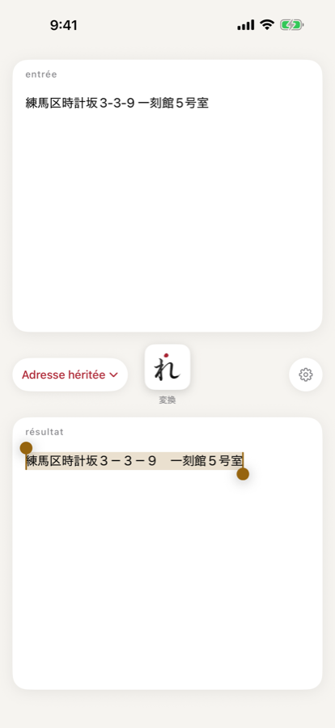
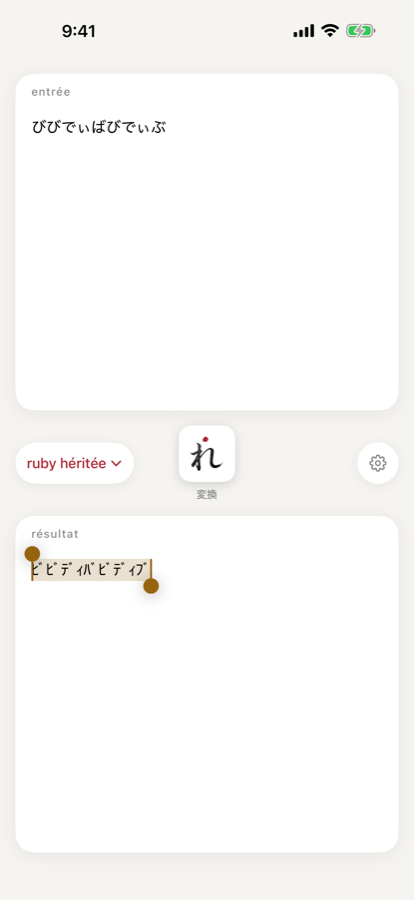
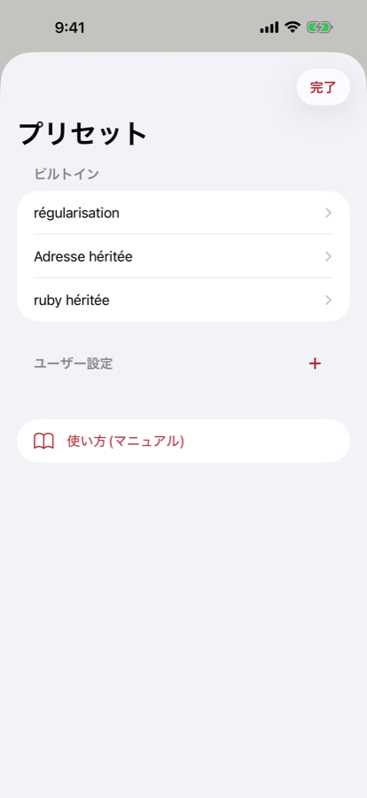
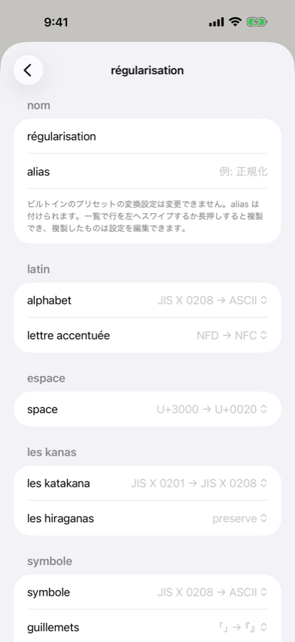

第3章プリセット
プリセットは、変換設定(第4章)の組み合わせに名前を付けたものです。はじめから入っている 3 つのビルトインと、自分で作るユーザー設定があります。
ビルトインのプリセット
ビルトインのプリセットは 3 つです。最初は régularisation が選ばれています。表にない項目は preserve(変えない)です。
| プリセット | 変換設定 | 何をするか |
|---|---|---|
| régularisation | alphabet: JIS X 0208 → ASCII lettre accentuée: NFD → NFC space: U+3000 → U+0020 les katakana: JIS X 0201 → JIS X 0208 symbole: JIS X 0208 → ASCII guillemets: 「」→『』 unit: ligature → SI | 全角の英数字・記号を半角に、半角カナを全角に、全角スペースを半角スペースに、アクセントを合成済みに、「」を『』に、単位の組文字を英字表記にします。 |
| Adresse héritée | alphabet: ASCII → JIS X 0208 lettre accentuée: NFD → NFC space: U+0020 → U+3000 les katakana: JIS X 0208 → JIS X 0201 symbole: ASCII → JIS X 0208 | 英数字・記号・スペースを全角に、カナを半角に、アクセントを合成済みにします。 |
| ruby héritée | les katakana: JIS X 0208 → JIS X 0201 les hiraganas: ひらがな→カタカナ | ひらがなをカタカナにしてから、カナを半角にします。 |


ビルトインのプリセットは、変換設定を変更できません。削除もできません。設定を変えて使いたいときは、複製してください。
プリセットを切り替える
メイン画面のプリセットのチップをタップするとメニューが開き、プリセットを選べます。メニューには、上にビルトイン、その下にユーザー設定のプリセットが並びます。選んだプリセットは、次に régu を開いたときも選ばれたままです。
切り替えただけでは変換し直しません。今の entrée を新しいプリセットで変換するときは、変換ボタンを押してください。
プリセットの一覧を開く
メイン画面の設定ボタン(歯車)を押すと、「プリセット」の画面が開きます。「ビルトイン」と「ユーザー設定」に分かれ、いちばん下に「使い方(マニュアル)」があります。「使い方(マニュアル)」を押すと、このマニュアルがブラウザで開きます。プリセットの行をタップすると、そのプリセットの設定画面が開きます。閉じるときは「完了」を押します。

ビルトインに別名(alias)を付ける
ビルトインのプリセットの設定画面では、「nom」の欄に本来の名前と「alias」の入力欄があります。alias を付けると、メイン画面のチップとそのメニューには alias が表示されます。プリセットの一覧では「régularisation - 正規化」のように、本来の名前の後ろに alias が付きます。
alias は、確定キーを押したとき、入力欄から離れたとき、画面を閉じたときに保存されます。空にするか、本来の名前と同じにすると、alias は消えます。

新しく作る
「プリセット」の画面で、「ユーザー設定」の見出しの右端にある + を押すと、「新しいプリセット」という名前のプリセットができ、設定画面が開きます。同じ名前がすでにあるときは「新しいプリセット 2」「新しいプリセット 3」…と番号が付きます。ビルトインに付けた alias と同じ名前も、使われている名前として番号を進めます。
新しいプリセットの変換設定は、すべて preserve から始まります。名前も変換設定も何も変えずに設定画面から戻ると、プリセットは追加されません(途中で変えても、元に戻してあれば追加されません)。
名前と変換設定を変える
ユーザー設定のプリセットは、設定画面の「nom」で名前を、その下の各項目で変換設定を変えられます。変えた内容はその場で保存されます。名前を空にしたときは保存されず、前の名前のままです。
ほかのプリセットと同じ名前にすると、「同じ名前のプリセットがあります」と表示されます。保存はされます。ビルトインに alias を付けているときは、その alias とも比べます。
複製する
「プリセット」の画面で行を左へスワイプして「複製」を押すか、行を長押しして「複製」を選ぶと、同じ変換設定のプリセットがユーザー設定に追加され、その設定画面が開きます。ビルトインのプリセットも複製できます。
複製の名前は「元の名前 copie」です。ビルトインを複製したときは、alias ではなく本来の名前を元にします。すでにあるときは「元の名前 copie 2」「元の名前 copie 3」…となります(ビルトインの alias と同じ名前も避けます)。「régularisation copie」を複製しても「régularisation copie copie」にはならず、「régularisation copie 2」のように番号が進みます。
左へ大きくスワイプしただけでは複製されません。ボタンを押したときだけ複製します。
削除する
ユーザー設定のプリセットは、行を左へスワイプして「削除」を押すか、長押しして「削除」を選ぶと削除できます。選んでいるプリセットを削除すると、régularisation が選ばれます。ビルトインのプリセットは削除できません。